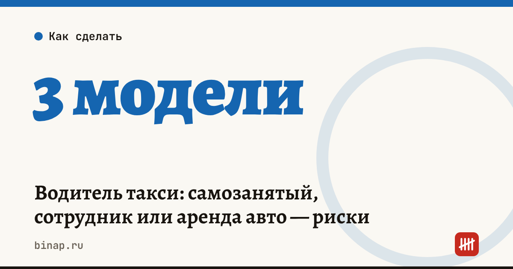

Водитель такси: самозанятый, сотрудник или аренда авто — риски

Таксопарк может работать с водителями по трём моделям: нанять их по трудовому договору, сдать им машины в аренду или заключить гражданско-правовой договор. От модели зависят взносы, ответственность и риск, что налоговая или трудовая инспекция признают отношения трудовыми. Чаще всего безопаснее либо честный трудовой договор, либо честная аренда — без смешения.
Коротко
- Трудовой договор: парк платит зарплату, НДФЛ и взносы, отвечает за график и охрану труда.
- Аренда машины без экипажа: водитель — самостоятельный перевозчик или работает через агрегатор, парк получает арендную плату.
- Гражданско-правовой договор с самозанятым водителем на работу «как у сотрудника» — самый рискованный вариант.
- Признаки трудовых отношений: график от парка, подчинение, фиксированная оплата за время, работа только на парк.
- Требования закона о такси к разрешениям и осмотрам проверьте для своей модели и региона.
Сроки, изменения и разборы для ИП и самозанятых — каждое утро в Telegram и MAX. Подпишитесь, чтобы не пропустить.
Три модели
| Модель | Что платит парк | Риски |
|---|---|---|
| Трудовой договор | зарплата, НДФЛ 13%, взносы, отпуска | высокие постоянные расходы |
| Аренда машины водителю | налог с арендной платы, расходы на машину | простой машины, если водитель ушёл |
| ГПХ с самозанятым «как сотрудник» | только оплата по договору | переквалификация: доначисление взносов и НДФЛ, штрафы |
Расчёт: что стоит парку один водитель
Расчёт редакции, цифры условные.
Трудовой договор. Зарплата 60 000 ₽ в месяц. Взносы около 30% — 18 000 ₽. Итого расходы парка — 78 000 ₽ в месяц плюс отпускные. Вся выручка с поездок — доход парка.
Аренда. Водитель платит 2 500 ₽ в день × 26 дней = 65 000 ₽ в месяц. Топливо и заработок — забота водителя. Расходы парка — машина, страховки, ТО. Сколько машина зарабатывает при аренде — в калькуляторе окупаемости машины.
Модель выбирают не по тому, где меньше налогов, а по тому, кто управляет работой: если парк ставит график и контролирует водителя, это трудовые отношения, как бы ни назывался договор.
Как не получить переквалификацию
- Не назначайте самозанятым водителям смены и не наказывайте за отказ от смены.
- Не платите фиксированную сумму за время — оплата по результату или аренда.
- Договор аренды должен быть настоящим: акт передачи машины, арендная плата, ответственность арендатора за машину.
- Документы о передаче и возврате машины храните.
Учёт аренды, зарплаты и взносов в одном сервисе: ссылка
Сколько стоят ошибки в зарплатных платёжках — штрафы за ошибки. Сколько часов в неделю самозанятые работают на платформах и что предлагают изменить — 60 часов для самозанятых. Все шаги — в разделе «Таксопаркам».
Частые вопросы
Может ли водитель быть самозанятым? Да, если он работает самостоятельно — например, арендует машину и сам выбирает, когда и через какой агрегатор работать. Если парк управляет его работой как работодатель, это риск переквалификации.
Кто платит штрафы за нарушения водителя? Зависит от модели и договора: при трудовом договоре многое ложится на парк как работодателя, при аренде — на арендатора. Пропишите это в договоре.
Нужно ли парку разрешение на такси? Требования закона о такси к перевозчикам, машинам и реестрам зависят от модели работы. Проверьте их в своём регионе до начала работы.